12 статей для 6 площадок. Публикация 17.11 после 10:00 МСК вместе с остальными статьями, если нет стоп-файла. TenChat: пицца 18.11 (там 1 пост в день). Дзен только после твоего «Дзен одобряю».
Одна башня на 500 человек: как устроена сборка WOW Башни и кто за что отвечает
Чтобы 500 человек построили один объект и не мешали друг другу, задачу режут на одинаковые куски, а сложность переносят в момент, когда куски встречаются. На этом принципе работает WOW Башня, тимбилдинг Каталиста, где компания своими руками собирает 10-метровую башню с вращающимися лопастями. Разбираю механику по шагам: кто что делает, где части стыкуются и почему всё упирается в синхронное вращение.
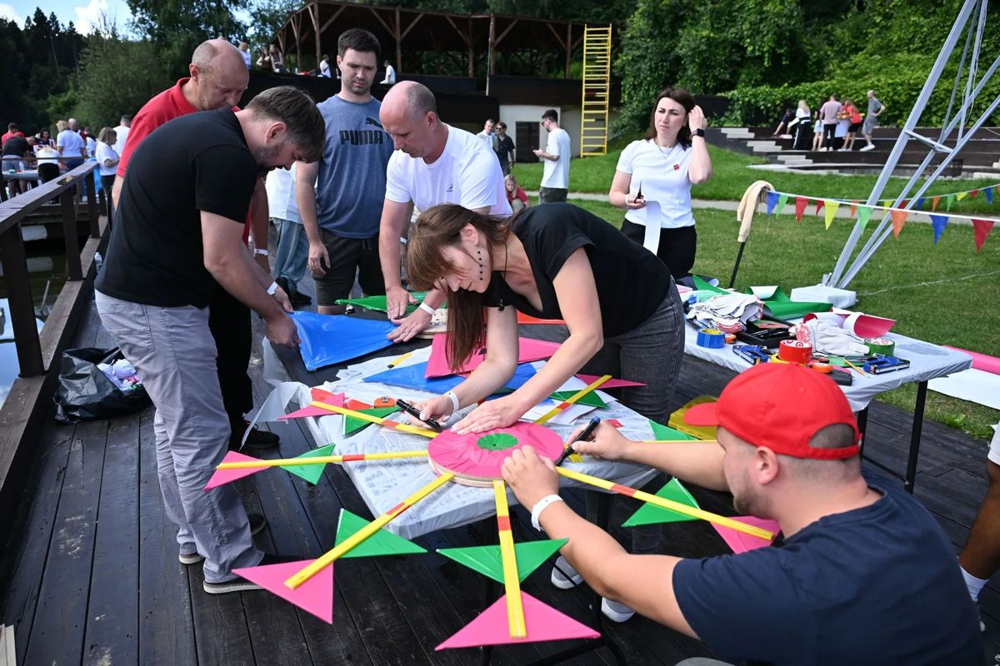
alt: Тимбилдинг WOW Башня от Каталиста: участники за столом собирают лопасть из цветных лучей
Что уже стоит на площадке, когда приходят люди
Участники не начинают с пустого места. Металлический каркас башни наши специалисты собирают до старта. Высота у него с трёхэтажный дом, около 10 метров. Каркас отвечает за то, чтобы конструкция стояла, а команды отвечают за то, чтобы она ожила.
Рядом с каркасом стоят рабочие столы. На каждый стол приходится одна команда и один одинаковый набор материалов. На фото с наших проектов видно, из чего собирают: цветные лучи, круглая фанерная ступица с отверстиями, крепёж на барашковых гайках. Работают в перчатках. Одинаковые наборы снимают вопрос «кому досталось лучше»: у всех равные стартовые условия, и разница в результате зависит только от того, как команда договорится.
Площадка бывает двух видов: улица или банкетный зал с высокими потолками. Башне нужен простор вверх, поэтому обычный конференц-зал с подвесным потолком не подойдёт. Если площадки ещё нет, мы помогаем её подобрать.
Как делят 500 человек
Программа рассчитана на группы от 10 до 500 человек. Ведущий делит всех на команды по 8-12 участников. Получается, что на 100 человек работает около десяти команд, на 500 человек несколько десятков. Каждая команда собирает свою часть конструкции: лопасть.
Внутри команды роли никто не назначает сверху. В ролике о сборке на 150 человек видно, как это происходит само: одни держат каркас лопасти, другие фиксируют стыки, третьи проверяют устойчивость. Тот, кто привык руководить, не всегда оказывается главным. Главным становится тот, кто первым понял, как лучи входят в ступицу.
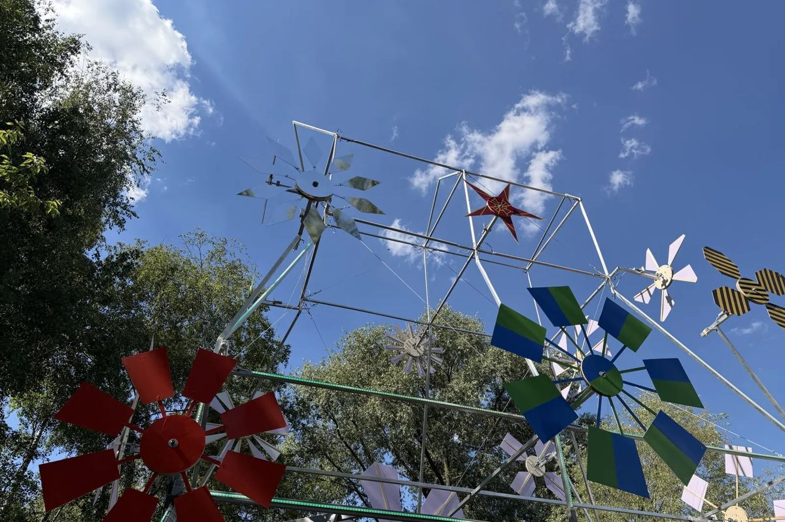
alt: Тимбилдинг WOW Башня: цветные лопасти на металлическом каркасе башни, вид снизу на фоне неба
Дизайн. Команда сама решает, как выглядит её лопасть. На наших проектах встречались молнии, сердца, ромашки, цветы и лопасти с логотипом компании.
Проверка. Перед тем как нести лопасть к башне, команда проверяет, что лучи сидят крепко и лопасть не перекошена.
Активная сборка занимает около 2 часов. В больших группах, как в ролике про 200+ человек, на конструирование и настройку лопастей уходило 3 часа.
Где стыкуются части
Самое интересное начинается, когда лопасти несут к башне. Части у команд разные: у одной молнии, у другой ромашка, у третьей логотип. Но все они должны идеально состыковаться в единый арт-объект. На странице программы это сформулировано так: части разные, но стыкуются «как процессы в реальном бизнесе».
На практике стык выглядит так. Каждая лопасть крепится к своему месту на общем каркасе. Если команда торопилась и собрала лопасть криво, это видно всем, кто стоит внизу. Ошибка одной команды становится заметной для всей компании, и исправлять её приходится вместе.
Ведущий и инструкторы помогают с креплением, но не собирают за участников: решения принимают люди.
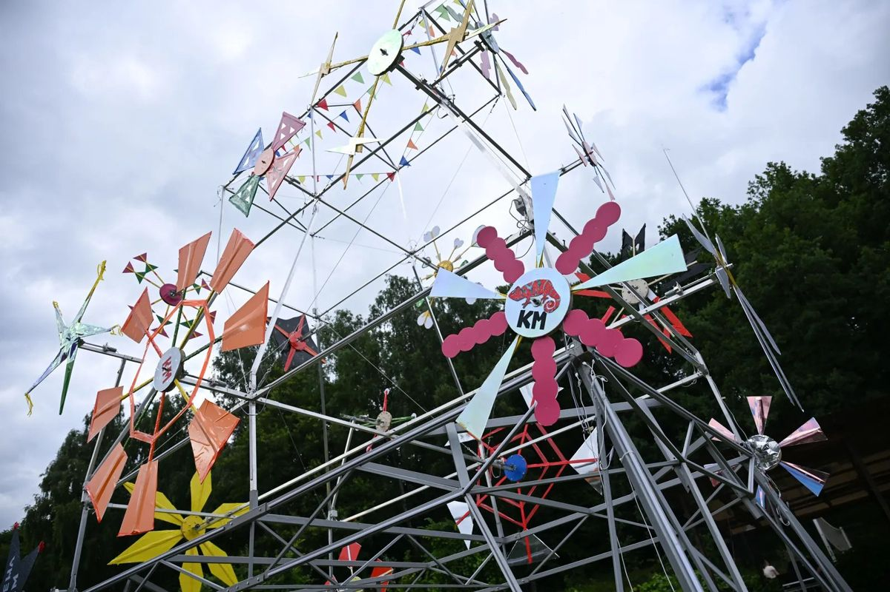
alt: Тимбилдинг WOW Башня от Каталиста: башня с десятками разноцветных лопастей, вид снизу
Почему лопасти должны крутиться синхронно
Финальная проверка у башни одна: лопасти вращаются. В ролике про 200+ человек задача звучала прямо: за 3 часа сконструировать и настроить лопасти так, чтобы они вращались синхронно.
Синхронность нельзя получить по отдельности. Команда может собрать идеальную лопасть у себя на столе, но если соседняя лопасть сидит иначе, общей картины не будет. Поэтому на последнем этапе команды начинают ходить друг к другу, сверяться и подтягивать крепёж. Тут и случается то, ради чего компании заказывают этот формат: люди из разных команд сами начинают договариваться без команды сверху.
Отсюда три навыка, которые мы закладываем в механику:
Синхронизация. Свою часть мало сделать хорошо, её нужно сделать в одном ритме с остальными.
Планирование. За 2 часа надо успеть собрать, украсить, проверить и закрепить. Кто не распределил время, не успевает к общему запуску.
Командная работа. Роли внутри команды и связи между командами складываются по ходу, без назначений.
Что остаётся в конце
В конце на площадке стоит 10-метровая башня с десятками разноцветных лопастей, которые вращаются. Её собрали все участники, и в ней видно вклад каждой команды. На наших проектах в этот момент все команды выходят на общее фото у подножия башни.
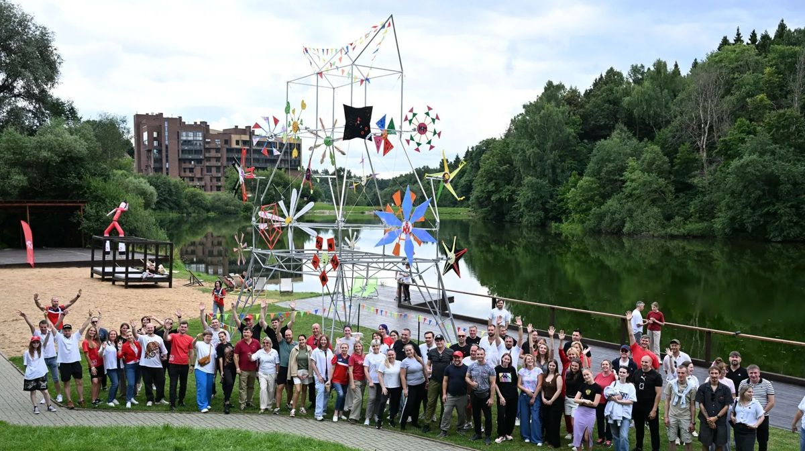
alt: Тимбилдинг WOW Башня: все команды позируют у собранной 10-метровой башни на берегу озера
Дальше всё делаем мы. В стоимость входят работа ведущего и инструкторов, весь реквизит и оборудование, монтаж, демонтаж и полная уборка площадки. Реквизит выпускает наше собственное производство, поэтому наборы для каждой команды одинаковые до последней гайки.
Насколько мне известно, это единственный такой тимбилдинг в России: формат вдохновлён лучшими фестивалями, где большие арт-объекты строят всем лагерем. Каталист проводит командные программы с 2010 года, за плечами 4 800 проектов, и башня стала новинкой и хитом 2026 года.
HR, руководитель и 10-метровая башня: как обосновать тимбилдинг, где все делают одно дело
Если руководитель просит «мероприятие, после которого отделы начнут работать вместе», ему нужен формат, где у всех один результат, а не победители и проигравшие. Я Мария Варламова, генеральный директор Каталиста. Расскажу, какую задачу HR закрывает WOW Башней, как объяснить выбор руководителю и как посчитать бюджет по нашей таблице цен.
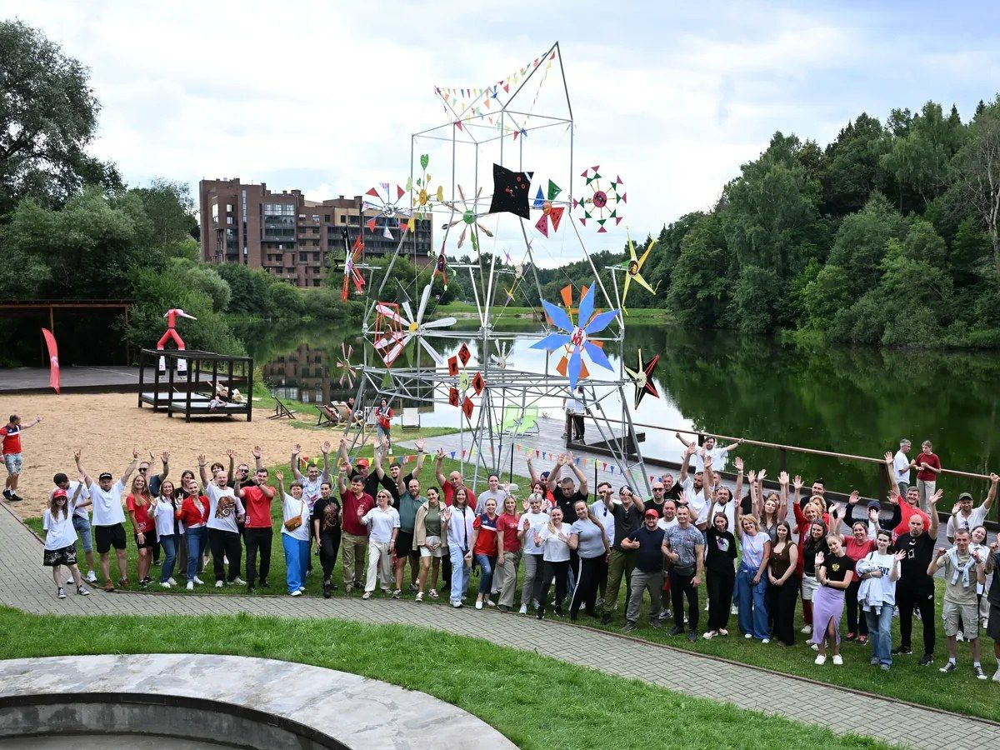
alt: Тимбилдинг WOW Башня от Каталиста: участники с поднятыми руками у башни на набережной
Какую задачу решает башня
Типичный запрос, с которым ко мне приходят HR: «У нас продажи, производство и офис живут как три разные компании. Хотим, чтобы люди увидели, что делают одно дело». Классический тимбилдинг с эстафетой или квестом тут часто работает против цели. Команды соревнуются, кто-то выигрывает, и делёж на «мы» и «они» только крепнет.
В WOW Башне соревноваться не с кем. Компания делится на команды по 8-12 человек, и каждая собирает свою часть одной конструкции: лопасть для 10-метровой башни. Части разные, но в конце они должны состыковаться в единый объект с вращающимися лопастями. На нашей странице это сказано так: «как процессы в реальном бизнесе». Отдел может сделать свою часть идеально, но если соседний отдел не успел, башня не закрутится.
Для HR это четыре конкретных эффекта, которые видно прямо на площадке:
Роли распределяются сами. В ролике про 150 человек хорошо видно: одни держат каркас лопасти, другие фиксируют стыки, третьи проверяют устойчивость. Никто это не назначал сверху. HR видит, кто в коллективе берёт ответственность, когда должности не работают.
Синхронность. Лопасти нужно настроить так, чтобы они вращались синхронно. Без договорённости между командами этого не получить.
Работа с ошибками. Кривую лопасть видно с земли. Её переделывают вместе, а не ищут виноватого.
Осязаемый результат. В конце стоит башня, которую собрали все. Её фотографируют, о ней рассказывают тем, кто не поехал.
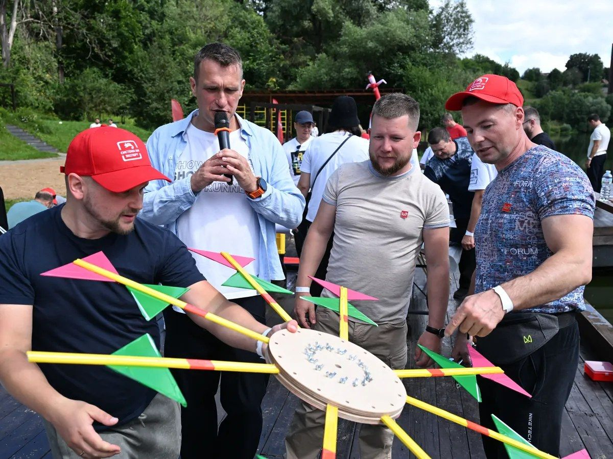
alt: Тимбилдинг WOW Башня: ведущий с микрофоном и команда держат собранную лопасть
Как я объясняю выбор руководителю
Руководители редко покупают «сплочение». Они покупают решение понятной проблемы. Поэтому я советую HR идти к руководителю с тремя аргументами, а не с презентацией про веселье.
Аргумент первый: модель бизнеса в миниатюре. Каждая команда отвечает за свой участок, а результат появляется только на стыке. Это та же логика, что у цепочки «продажи, производство, доставка». Руководитель видит в башне свою компанию, а не развлечение.
Аргумент второй: результат измеряется глазами. Башня либо вращается, либо нет. Не нужны анкеты удовлетворённости и баллы. Фото башни с десятками лопастей объясняет итог лучше отчёта.
Аргумент третий: символ. Башня задумана как символ энергии и ценностей компании. Команды сами придумывают дизайн лопастей: на наших проектах были молнии, сердца, ромашки и лопасти с логотипом заказчика. Руководитель получает визуальный образ, который можно использовать во внутренних коммуникациях.
Есть и простой аргумент для скептиков. Это новинка 2026 года и, насколько я знаю, единственный такой тимбилдинг в России. Формат вдохновлён лучшими фестивалями, где большие объекты строят всем лагерем. Скорее всего, ваши сотрудники такого ещё не видели.
Сколько стоит и как считать бюджет
Цены на WOW Башню считаются за всё мероприятие, а не за человека. Это удобно для бюджета: HR знает сумму заранее, даже если число участников ещё плавает в пределах одной строки таблицы.
Участников
Цена за мероприятие
до 50
450 000 ₽
до 75
550 000 ₽
до 100
650 000 ₽
до 125
725 000 ₽
до 150
800 000 ₽
до 175
875 000 ₽
до 200
950 000 ₽
от 200
индивидуально
Цены ориентировочные. Итоговую смету мы присылаем после брифа, на это уходит 10 минут.
Что входит в сумму: работа ведущего и инструкторов, весь реквизит и оборудование, монтаж, демонтаж и полная уборка площадки. Отдельно HR планирует площадку, трансфер и питание, если они нужны. Площадка подойдёт уличная или банкетный зал с высокими потолками. Если своей нет, помогаем подобрать.
Мой совет по бюджету: смотрите на шаг таблицы. Если у вас 102 человека, проверьте, точно ли поедут все. Разница между строками «до 100» и «до 125» составляет 75 000 ₽.
Что HR стоит подготовить заранее
Чтобы мероприятие сработало на задачу, а не просто прошло, я прошу HR заранее ответить на четыре вопроса:
Как смешивать команды. Если цель в связях между отделами, команды собираем из разных подразделений. Если цель в сплочении нового отдела, оставляем людей вместе.
Что должно быть на лопастях. Ценности компании, логотип, тема года. Это превращает башню в тот самый символ.
Сколько времени есть. Активная сборка занимает около 2 часов. Каркас башни наши специалисты собирают до старта, поэтому участники приходят сразу к работе.
Кто будет на площадке от руководства. Когда генеральный директор держит лопасть вместе с командой, это видят все.
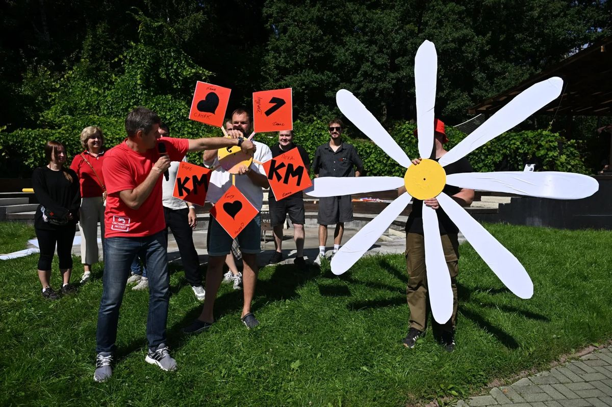
alt: Тимбилдинг WOW Башня от Каталиста: команда на лужайке показывает готовую белую лопасть-ромашку
WOW Башня в программе выезда: площадка, тайминг, смета и чек-лист для ивент-менеджера
Ивент-менеджеру WOW Башня экономит самое дорогое: время на подрядчиков. Монтаж, демонтаж, уборку, ведущего, инструкторов и весь реквизит закрывает одна строка сметы. Ниже разбираю, что нужно от площадки, как встроить башню в тайминг дня, из чего складывается смета и что спросить у заказчика до брифа.
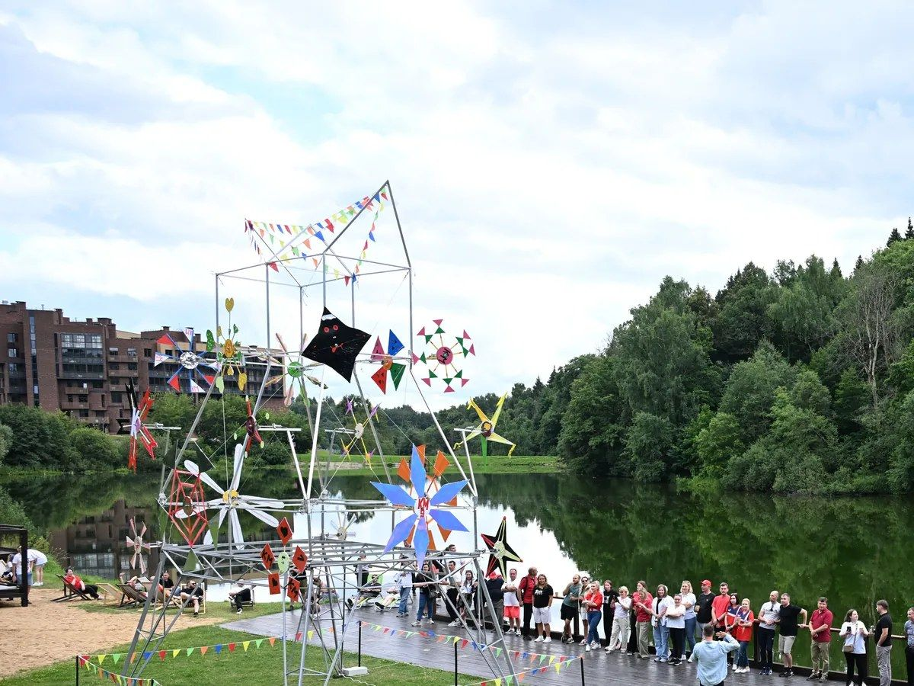
alt: Тимбилдинг WOW Башня от Каталиста: башня у озера, рядом участники и флажки
Площадка: два варианта и одно жёсткое условие
Башня высотой около 10 метров, это примерно трёхэтажный дом. Отсюда главное условие: простор вверх. Подходят два типа площадок.
Улица. Поляна загородного отеля, лужайка базы отдыха, набережная, берег озера. На наших проектах башня стояла у воды и на набережной, команды работали на лужайке и на деревянном помосте. Плюс улицы в том, что башню видно издалека, и финальное фото получается с горизонтом.
Банкетный зал с высокими потолками. Вариант для холодного сезона или когда выезд невозможен. Проверьте фактическую высоту зала до люстр и подвесных конструкций, а не высоту из рекламного буклета площадки.
Если площадка ещё не выбрана, мы помогаем её подобрать. Для ивент-менеджера это значит, что можно прийти к нам с датой и числом людей, а площадку искать вместе.
Что ещё учесть на площадке: место под рабочие столы для всех команд рядом с башней и зону для общего фото у подножия. Команды по 8-12 человек, поэтому для 200 участников нужно разместить около двадцати рабочих мест.
Тайминг: что происходит до, во время и после
Самое удобное для менеджера: каркас башни наши специалисты собирают до старта. Гости не ждут, пока бригада монтирует металл. Они приходят к готовому каркасу и сразу берутся за работу.
Сам блок выглядит так:
Брифинг. Ведущий делит гостей на команды по 8-12 человек и объясняет задачу: собрать свою лопасть и закрепить её на общей башне.
Сборка. Около 2 часов активной работы. Команды получают одинаковые наборы материалов, собирают лопасти и придумывают им дизайн.
Стыковка. Лопасти несут к башне и закрепляют. Цель: чтобы все вращались синхронно.
Финал. Запуск башни и общее фото всех команд.
После финала наша команда делает демонтаж и полную уборку площадки. Менеджеру не нужно держать отдельную бригаду и договариваться с площадкой о вывозе.
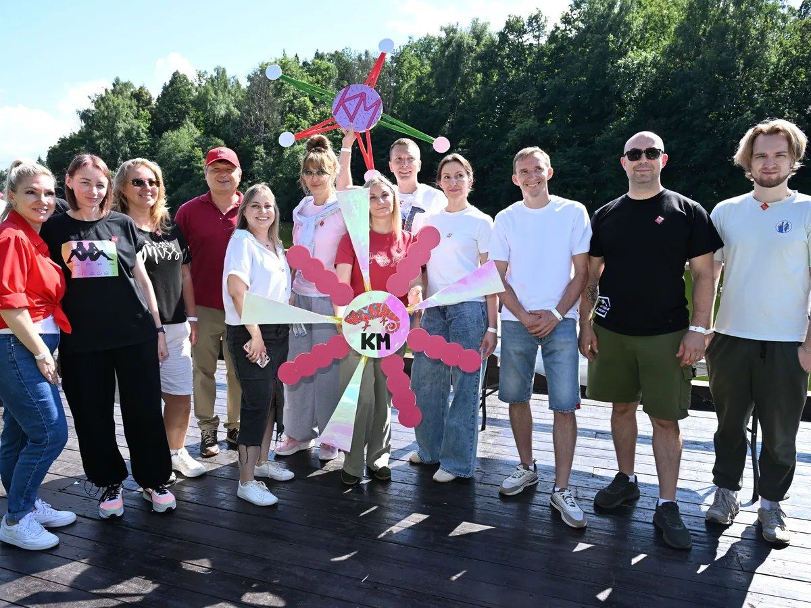
alt: Тимбилдинг WOW Башня: команда на деревянном помосте с лопастью-цветком
На большой группе закладывайте запас. В ролике про 200+ человек на конструирование и настройку лопастей ушло 3 часа. Хорошее правило: башню ставим первой половиной дня, а банкет или вечернюю программу после неё. Так у гостей есть время на сборку без спешки.
Смета: как читать нашу таблицу
Цены за всё мероприятие, ориентировочные:
до 50 человек: 450 000 ₽;
до 75: 550 000 ₽;
до 100: 650 000 ₽;
до 125: 725 000 ₽;
до 150: 800 000 ₽;
до 175: 875 000 ₽;
до 200: 950 000 ₽;
от 200: считаем индивидуально.
В стоимость входят работа ведущего и инструкторов, весь реквизит и оборудование, монтаж, демонтаж и полная уборка площадки. На странице это сформулировано так: «Вам остаётся только приехать и собрать башню».
Что в нашу смету не входит и закладывается отдельно: аренда площадки, трансфер гостей, кейтеринг. Итоговую смету присылаем после брифа, на это уходит 10 минут.
Подсказка для агентств, которые берут нас подрядчиком: у Каталиста своя школа ведущих и своё производство реквизита. Ведущий и наборы материалов приезжают от одной команды, и вам не нужно сводить разных подрядчиков на площадке.
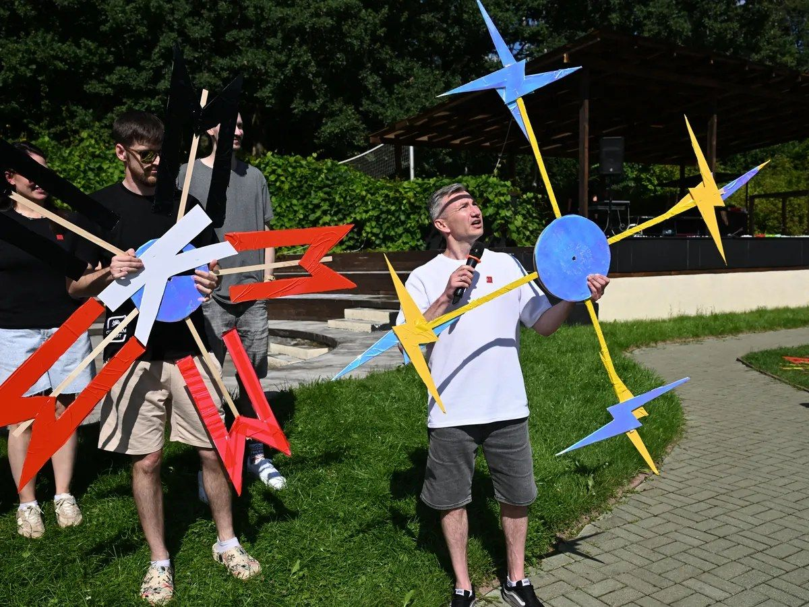
alt: Тимбилдинг WOW Башня от Каталиста: участники с лопастями-молниями, ведущий с микрофоном
Чек-лист: что спросить у заказчика до брифа
Отправьте заказчику эти вопросы заранее. С ответами бриф займёт минуты, а смета придёт сразу точной.
Сколько человек точно поедет? Программа рассчитана на 10-500 участников. Цена меняется по шагам таблицы, поэтому точное число важно.
Дата и сезон. От этого зависит выбор между улицей и залом.
Площадка уже есть? Если да, нужна высота потолка или фото открытого пространства. Если нет, подберём вместе.
Сколько времени в программе дня? Закладываем около 2 часов сборки плюс брифинг и финал.
Что должно быть на лопастях? Логотип, ценности, тема года. Команды могут придумать дизайн сами: у нас были молнии, сердца, ромашки, цветы.
Как делить команды? Смешивать отделы или оставлять их вместе.
Что после башни? Банкет, вечеринка, отъезд. От этого зависит, когда начинаем демонтаж.
Что получает заказчик и кому предложить башню
На странице программы мы пишем, что башня развивает синхронизацию, планирование и командную работу. Для отчёта ивент-менеджера перед заказчиком важнее другое: результат виден глазами. В конце дня на площадке стоит 10-метровая башня с вращающимися лопастями, собранная всеми гостями, и общее фото всех команд у её подножия. Если на лопастях логотип или ценности компании, у заказчика остаются кадры для внутренних коммуникаций.
Башня хорошо встаёт в выездной корпоратив, стратегическую сессию с командной частью, юбилей компании и летний день компании. Формат новый, 2026 года, и, по словам нашей команды, единственный такой тимбилдинг в России. Он вдохновлён лучшими фестивалями, где большие арт-объекты строят всем лагерем, поэтому гостям с опытом стандартных квестов есть чем удивиться.
Из чего сделана WOW Башня: каркас, лопасти и гайки, которые закручивают руками
Чтобы 500 человек без инженерного опыта собрали 10-метровую башню за 2 часа, сложную часть берут на себя специалисты, а участникам достаются детали, которые крепятся руками. Покажу, как это устроено в WOW Башне Каталиста: что делаем мы до приезда гостей, что достаётся командам и как всё это потом исчезает с площадки. Пишу только о том, что видно на фото с наших проектов и в роликах.
WOW Башня состоит из двух частей, и у каждой свой исполнитель.
Каркас. Металлическая конструкция высотой около 10 метров, с трёхэтажный дом. Каркас держит всю башню и определяет, где окажется каждая лопасть. Его собирают наши специалисты до старта программы. Участники каркас не монтируют: это работа монтажной команды.
Лопасти. Всё, что вращается на каркасе, собирают сами участники. Каждая команда делает одну лопасть, и в финале все лопасти стыкуются в единый арт-объект. Разделение принципиальное: то, от чего зависит устойчивость башни, делают специалисты, а то, где важны идея и договорённость, делают люди.
На фото снизу видно, как это выглядит в готовом виде: металлическая решётка каркаса и десятки цветных лопастей вокруг неё на фоне неба.
alt: Тимбилдинг WOW Башня от Каталиста: цветные лопасти на металлическом каркасе, вид снизу на фоне неба
Лопасть: ступица, лучи, крепёж
Лопасть собирается вокруг круглой фанерной ступицы. В ступице заранее сделаны отверстия, к ней крепятся цветные лучи. На крупном плане видно, как руки в перчатках прижимают луч к фанере и закручивают барашковую гайку.
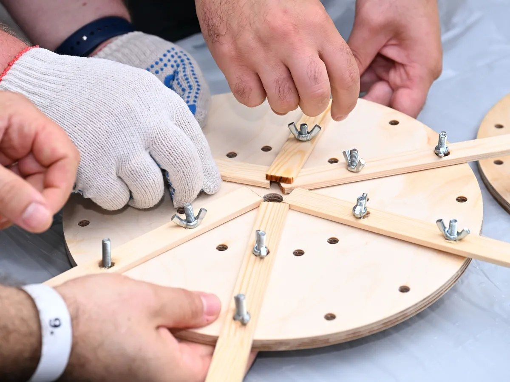
alt: Тимбилдинг WOW Башня: руки в перчатках крепят лучи к фанерной ступице барашковыми гайками
Почему именно барашковые гайки? Такую гайку закручивают пальцами, без ключа и отвёртки. Для команды из 8-12 человек это значит, что инструмент не становится узким местом: работать могут сразу несколько пар рук.
Сами лучи цветные. На одном из кадров видно, что участники работают с лучами и плёнкой. Форму команда выбирает сама. На наших проектах встречались:
молнии;
сердца;
ромашки, в том числе белые;
цветы с разноцветными лепестками;
лопасти с логотипом компании-заказчика.
Рядом с лопастями команды иногда держат таблички с символами: так они объясняют, что заложили в свою часть.
Одинаковые наборы для всех
Каждая команда получает одинаковый набор материалов. Это правило производства и одновременно правило игры. Если у одной команды лучей больше, а у другой гаек меньше, спор пойдёт о несправедливости, а не о том, как договориться.
Одинаковые наборы возможны потому, что у Каталиста своё производство реквизита. Наборы для всех команд мы готовим сами, поэтому ступица, лучи и крепёж у всех одни и те же.
Рабочее место простое. Команды собирают лопасти за столами или на деревянном помосте, если площадка уличная. На кадрах с проектов видно лужайку, помост и столы прямо у подножия башни, чтобы готовую лопасть не нужно было нести далеко.
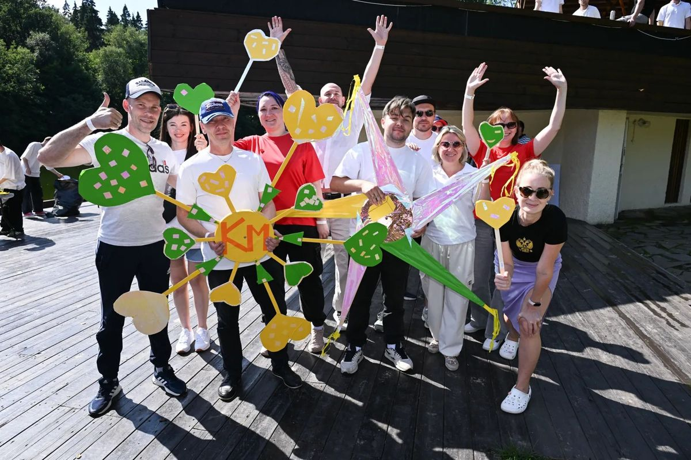
alt: Тимбилдинг WOW Башня от Каталиста: команда на помосте поднимает готовые лопасти-сердца и ромашки
Стыковка: где производство встречается с людьми
Самый ответственный момент в механике башни, когда собранная лопасть переходит со стола на каркас. Лопасти у команд разные по дизайну, но каждая должна встать на общий каркас и не помешать соседней.
Задача участников в финале: настроить лопасти так, чтобы они вращались синхронно. Здесь работает то, о чём говорит ролик о программе на 150 человек: одни держат каркас лопасти, другие фиксируют стыки, третьи проверяют устойчивость. Ведущий и инструкторы помогают с креплением, но решения остаются за командами.
Когда все лопасти на месте, конструкция превращается в башню с вращающимися лопастями. На фото снизу видно, как десятки разных лопастей складываются в одну картину.
alt: Тимбилдинг WOW Башня: башня с десятками разноцветных лопастей, вид снизу
Как масштаб влияет на конструкцию
Программа рассчитана на группы от 10 до 500 человек, команды по 8-12 участников. Башня во всех случаях 10-метровая, а с численностью растёт число лопастей: каждая команда приносит свою. Небольшая компания собирает несколько лопастей, большая закрывает каркас десятками. На кадре снизу с одного из проектов видно, как плотно ложатся лопасти, когда команд много.
Для производства это значит простую арифметику: сколько команд, столько одинаковых наборов. Для заказчика это значит, что масштаб не зависит от численности: гигантской башню делает высота, а не число людей.
Формат вдохновлён лучшими фестивалями, где большие арт-объекты строят всем лагерем. Мы перенесли эту идею в корпоративный тимбилдинг и разделили работу так, чтобы несущую конструкцию собирали специалисты, а лопасти собирали команды.
Монтаж, демонтаж и уборка
Вся инженерная часть входит в стоимость программы: весь реквизит и оборудование, монтаж до старта, демонтаж после финала и полная уборка площадки. Площадка подходит уличная или банкетный зал с высокими потолками: каркасу нужен простор вверх.
Схема дня для монтажной команды выглядит так:
Приезд на площадку и сборка металлического каркаса до прихода гостей.
Раскладка одинаковых наборов по рабочим местам команд.
Сопровождение сборки: около 2 часов работы участников.
После финала демонтаж лопастей и каркаса и уборка.
Участники в этой схеме видят только середину. Они приходят к готовому каркасу и уходят, когда башня закончена. Всё, что до и после, делает наша команда.
Medium (EN) · флагман WOW Башня, угол: сравнение форматов (один общий объект vs квест, эстафета, кулинарный формат, бизнес-игра) · 5503 знаков · публикация: 2026-11-17 10:00 МСК
Quest, Relay, Cooking or One Giant Tower? Choosing a Team Building Format by the Result You Want
If your team building has to leave people with one shared result rather than a winner and a scoreboard, the format matters more than the venue or the catering. I'm Maria Varlamova, CEO of Katalist, an event agency in Moscow that has run 4,800 projects since 2010. Here is how I compare the most common formats, and when I recommend that a company build one giant object together instead.
alt: WOW Tower team building by Katalist: participants hold lightning-shaped blades as the host speaks
Four familiar formats and what they actually train
Most corporate briefs land on one of four formats. Each of them works, but each trains a different muscle.
The quest. Teams move through a storyline or a route, solve puzzles and collect clues. A quest shows how people think under time pressure and who pulls scattered information together. Its weak spot: teams usually play in parallel and rarely need each other. You get eight good teams, not one company.
The sports relay. Fast, loud, physical. A relay is great for energy after a long conference day. But it ranks teams by speed, and the people who are not sporty often end up as spectators. It also creates winners and losers by design.
The cooking format. Teams cook together, and everyone eats the result. At Katalist we run WOW Pizza, where each team makes its own piece of one 3-metre pizza so that the whole pizza comes out right. Cooking is warm and social, and it already hints at the idea of a shared result. The result, though, is eaten within the hour.
The business game. A simulation of markets, budgets or negotiations. It trains strategic thinking and works well for management teams. It asks for a certain mindset, and a mixed audience of engineers, sales and back office may find it too close to their day job.
None of these is wrong. The question is what you want people to feel when they walk away.
What changes when everyone builds one object
In WOW Tower, the company splits into teams of 8 to 12 people. Each team builds its own part of one structure: a blade for a 10-metre tower, roughly the height of a three-storey building. Our specialists assemble the metal frame before the start. The teams build the blades, design them and fix them to the tower. In the end, the tower stands with all blades rotating.
Three things are different from the formats above.
Nobody wins alone. There is no ranking. A team can build a perfect blade, but if the neighbouring blade is off, the tower doesn't look right. Success is defined at the joints between teams, not inside them.
The parts are different, but they must fit. One team makes lightning bolts, another a daisy, another the company logo. All of them must come together into one art object. On our programme page we describe it as fitting together "like processes in a real business". Managers often recognise their own company in that sentence.
Sync is the final test. In one of our projects with 200+ people, the task was to design and tune the blades within 3 hours so that they rotated in sync. You can't achieve that inside one team. People have to walk over to the next table and agree.
alt: WOW Tower team building: all teams pose by the finished 10-metre tower on a lakeshore
Roles also appear without anyone assigning them. In a video from a project with 150 people, you can see one group holding the blade frame, another fixing the joints and a third checking stability. Every team gets an identical kit of materials, so the only variable is how people organise themselves.
How I choose: a short decision guide
When a client asks me which format to pick, I ask what problem they want to solve. Here is the shortcut I use.
Departments barely talk to each other. One shared object. A typical request sounds like this: "Sales and production act as two different companies." A tower makes the dependency between teams visible.
People are tired and need energy. A sports relay or an outdoor quest.
A new team that doesn't know each other yet. A cooking format or a light story quest: low pressure, lots of small talk.
Leadership team working on strategy. A business game.
A company milestone or a launch of new values. One shared object again. The tower is designed as a symbol of the company's energy and values, and teams can put their own symbols on the blades.
The tower is not the answer for every brief. It needs space upwards: an outdoor site or a banquet hall with high ceilings. It needs about 2 hours of active assembly. And it's best when the whole company is in one place, from 10 up to 500 people.
alt: Katalist team building: a team on a lawn shows its finished white daisy-shaped blade
Why one shared result sticks
A scoreboard is forgotten the day after. A physical object that everyone built is harder to forget. At the end of WOW Tower, all teams gathered for one photo at the foot of the tower on our projects, and that photo shows every blade and every team in one frame.
The tower is our newest format, launched in 2026. As far as we know, it's the only team building of its kind in Russia. It was inspired by the best festivals, where whole camps build large art objects together. We built the logistics around the client: the price covers the host and instructors, all props and equipment, set-up, dismantling and full cleaning of the site. As our page puts it, all you need to do is arrive and build the tower.
Substack (EN) · флагман WOW Башня, угол: вопросы и ответы (FAQ) · 5038 знаков · публикация: 2026-11-17 10:00 МСК
WOW Tower Team Building: 14 Questions Clients Ask Before Booking, Answered
These are the answers to the questions we hear most often about WOW Tower, so you can decide in ten minutes whether it fits your next company event. We are Katalist, an event agency in Moscow. Since 2010 we have run 4,800 projects and won 16 event industry awards. WOW Tower is our newest format, launched in 2026.
alt: WOW Tower team building by Katalist: host with a microphone and a team holding their finished blade
The basics
1. What is WOW Tower in one sentence?
WOW Tower is a team building where your company builds a giant 10-metre tower with rotating blades: every team makes one part, and all the parts must fit together into one art object.
2. How tall is it, really?
About 10 metres, roughly the height of a three-storey building. In our short video we call it a tower the size of a three-storey house, and the comparison is accurate.
3. How many people can take part?
From 10 to 500. Participants are split into teams of 8 to 12 people, and each team builds its own blade. The more people you bring, the more blades the tower gets. The tower is 10 metres tall in every case, so a smaller company still gets the full scale, just with fewer blades.
4. How long does it take?
About 2 hours of active assembly. With very large groups, plan extra time: on a project with 200+ people, designing and tuning the blades took 3 hours.
How it works on the day
5. Do participants build the whole structure?
No. Our specialists assemble the metal frame of the tower before the start. Participants arrive at a ready frame and go straight to the creative part: building the blades, designing them and fixing them to the tower. The load-bearing structure is our job, and the blades are yours. That split is why a group with no engineering background can finish a 10-metre tower in about 2 hours.
6. What does each team actually do?
Every team gets an identical kit of materials. On our projects, people work in gloves, attach coloured rays to a round plywood hub and tighten them with wing nuts by hand. Then they decide what their blade looks like. We have seen lightning bolts, hearts, daisies, flowers and blades with the client's logo.
alt: WOW Tower team building: the tower by a lake with participants and flags nearby
7. Who decides who does what inside a team?
The team does. In the video from a project with 150 people, nobody assigned roles from above: some people held the blade frame, others fixed the joints, others checked stability. That is one of the things clients come for: you see who takes responsibility when job titles don't matter.
8. What is the final goal?
To fit all blades onto the tower and tune them so that they rotate in sync. One team can't do this alone, so in the last phase teams start checking with each other. The page describes the parts as fitting together "like processes in a real business".
Venue and logistics
9. Where can it take place?
Outdoors or in a banquet hall with high ceilings. The tower needs vertical space, so a standard meeting room won't work. On our projects the tower has stood by a lake and on an embankment. If you don't have a venue yet, we help you find one.
10. What do we need to organise ourselves?
Very little. The price includes the work of the host and instructors, all props and equipment, set-up, dismantling and full cleaning of the venue. As our programme page puts it, all you have to do is arrive and build the tower. The venue rental, transport and catering are separate if you need them.
11. Who leads the programme?
A host with a microphone runs the programme, and instructors support the teams. Katalist has its own school for hosts and its own props production, so the host and the kits come from one team.
alt: Katalist team building: a team on a wooden platform lifts heart and daisy-shaped blades
Price and fit
12. How much does it cost?
Prices are for the whole event, not per person, and they are approximate. Up to 50 people: 450,000 RUB. Up to 75: 550,000 RUB. Up to 100: 650,000 RUB. Up to 125: 725,000 RUB. Up to 150: 800,000 RUB. Up to 175: 875,000 RUB. Up to 200: 950,000 RUB. Over 200 people: calculated individually. We send a final estimate after a brief that takes 10 minutes.
13. Who is it for, and who should choose something else?
It fits companies that want one shared result instead of winners and losers: departments that need to work together, a company anniversary, a launch of new values. The tower is designed as a symbol of the company's energy and values, and it develops synchronisation, planning and teamwork. Choose another format if you have no venue with vertical space, or if you only have 30 minutes in the agenda. If your main goal is pure competition with a scoreboard, a sports relay will serve you better: the tower has no winners by design. As far as we know, this is the only team building of its kind in Russia, inspired by the best festivals where whole camps build large art objects together.
Дзен · флагман WOW Пицца, угол: как устроено производство (печь, камни, угли, поддон, тесто, логистика, площадка) · 5164 знаков · публикация: после «Дзен одобряю» Маши (потом 2026-11-17 10:00 МСК или ближайшая дата)
Печь на 80 итальянских камней: как мы выпекаем трёхметровую пиццу прямо на площадке
Чтобы испечь пиццу длиной 3 метра в парке или на базе отдыха, нужна печь, которую нельзя купить. Мы спроектировали её сами, и сейчас это единственная выездная печь для пиццы в России. Ниже рассказываем, из чего она собрана, что ещё мы везём на площадку и почему тесто замешиваем за сутки до события. Текст пригодится тому, кто планирует выездной день для компании и хочет заранее понять, сколько места, времени и подготовки займёт кулинарный тимбилдинг WOW Пицца.
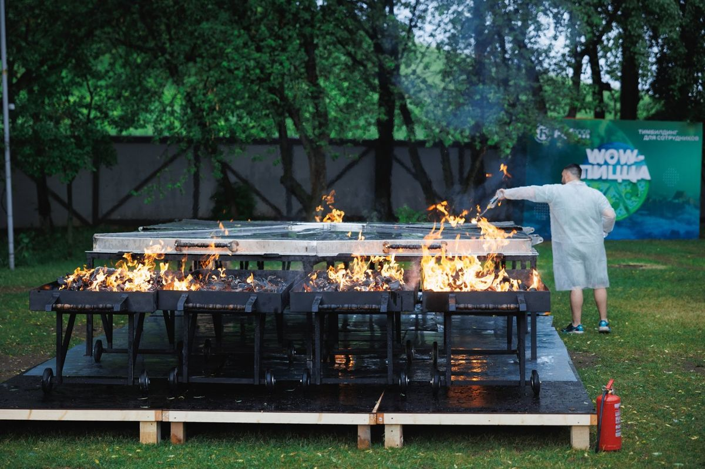
alt: Кулинарный тимбилдинг WOW Пицца от Каталиста: огненные мангалы для гигантской пиццы вечером в парке
Печь, которую пришлось придумать
Печь пиццерии рассчитана на порционную пиццу. Трёхметровый корж в неё не войдёт ни целиком, ни частями, а резать его до выпечки нет смысла: участники собирают одно общее блюдо. Поэтому мы начали не с рецепта, а с печи.
Основа печи: 80 шамотных камней, которые мы привезли из Италии. Шамот держит и ровно отдаёт жар, поэтому из него и делают под в печах для пиццы и хлеба. Пиццу запекаем на углях, а не на газе и не на электричестве. Вечером это видно издалека: открытый огонь мангалов служит декорацией без всякого дополнительного оформления.
Вторая деталь, о которой мало кто думает заранее, это поддон. Участники раскатывают тесто прямо на поддоне из пищевой нержавеющей стали, и этот же поддон потом целиком уходит в печь. Сырое тесто такого размера не нужно перекладывать с места на место. Начинка остаётся там, куда её положили команды, а края кусков не расходятся при переносе.
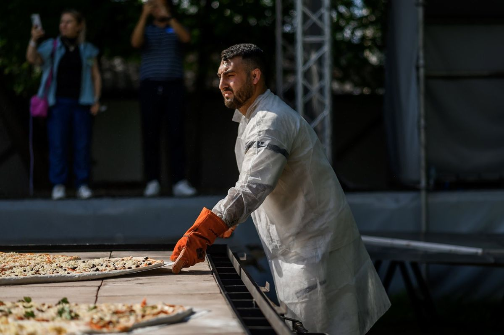
alt: Тимбилдинг WOW Пицца: повар в перчатке вынимает из печи противень с трёхметровой пиццей
Тесто начинаем за день
Тонкое тесто готовим по рецепту нашего бренд-шефа. Замешиваем его за день до мероприятия, ночью оно настаивается, на площадку приезжает пышным и готовым к выпечке. На месте участникам остаётся раскатать его на поддоне, приготовить соусы, нарезать продукты и выложить начинку.
Такой порядок снимает две проблемы сразу. Первая: замес и подъём теста занимают время, которого нет в программе на 2-2,5 часа. Вторая: результат не зависит от того, умеет ли кто-то в команде печь. Хрустящий край с поджаристой корочкой получается за счёт рецепта, камня и углей, а участники отвечают за то, что видно глазу: форму, начинку и стыки между кусками.
Как это выглядит на кухне, рассказывает шеф Кирилл Еселев в коротком ролике:
Что приезжает на площадку
Выездная кухня собирается из нескольких частей, и все их мы привозим сами:
печь и все подключения к ней;
шатёр, под которым команды работают за столами;
вода и обогреватели;
продукты для соусов и начинки, тесто;
кухонные принадлежности, одноразовая посуда, столовые приборы и салфетки;
одежда для участников: на фотографиях с наших программ это фартуки, сетки для волос и колпаки;
браслеты участников и фирменные коробочки для несъеденной пиццы.
С кухней работает выездная группа: шеф-повар, ведущий, инструкторы, аниматоры и техники. Шеф отвечает за тесто, печь и выпечку. Ведущий держит тайминг и делит гостей на команды. Техники следят за печью и подключениями, аниматоры работают с гостями, пока пицца стоит в печи.
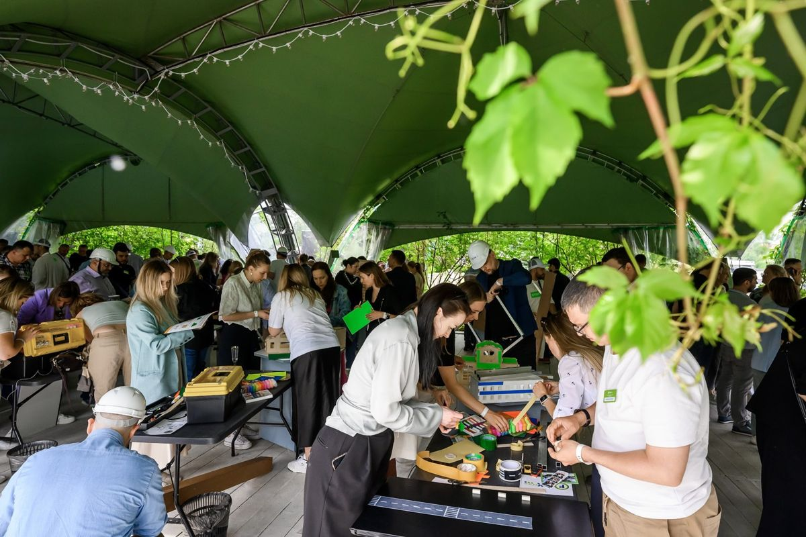
alt: Тимбилдинг WOW Пицца от Каталиста: участники раскатывают тесто под зелёным шатром
Девять квадратных метров и другие требования к месту
Самый частый вопрос от площадок: сколько места нужно под печь. Ответ: около 9 м² на открытом воздухе. Печь работает на углях, поэтому ставим её на улице. Сама программа может идти на улице или в помещении: команды готовят в зале, а пиццу выносят к печи и обратно.
Перед выездом мы уточняем у площадки четыре вещи:
Есть ли ровный участок около 9 м² под открытым небом, куда разрешён открытый огонь.
Где встанет шатёр и столы для команд, если программа идёт на улице.
Как близко от печи зона, где гости будут есть.
Сколько километров от Москвы: удалённость влияет на цену так же, как сезон и число гостей.
Программа рассчитана на 50-200 человек, а в таблице цен есть строки и для групп 200-300, 300-500 и больше 500 человек. Для больших групп меняется число поддонов и людей в выездной группе, но печь остаётся той же.
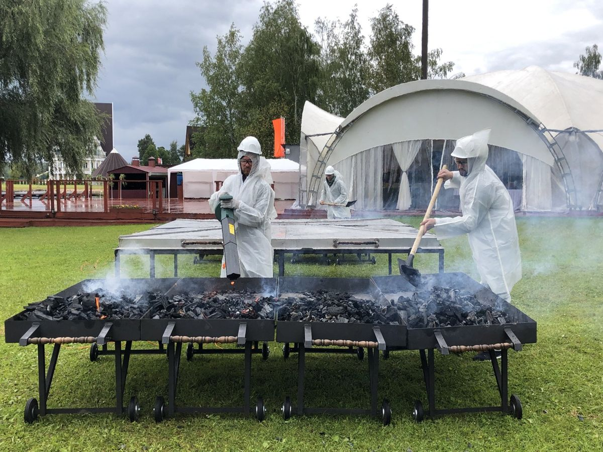
alt: Выездной тимбилдинг WOW Пицца: огненные мангалы и шеф-повар в белом на поляне
Как кухня превращается в игру
Всё перечисленное выше работает на один сюжет из четырёх этапов. Сначала ведущий делит гостей на команды, а шеф знакомит их с печью и объясняет тонкости. Потом команды готовят соусы, раскатывают тесто и выкладывают начинку, каждая на своём куске. На третьем этапе куски собирают в одну пиццу и вместе переносят в печь. На четвёртом все едят горячую пиццу, а то, что не съели, мы упаковываем в коробочки с логотипом компании, и гости забирают их домой.
Каждая команда отвечает за свой кусок и знает, что от него зависит общий вид пиццы. Поэтому вокруг стыков всегда много разговоров: кто закрывает край, куда уходит соус, как не перегрузить свою часть начинкой.
Что важно для бюджета. В цену входят ведущий, инструкторы, печь со всеми подключениями, продукты, посуда, одежда участникам и коробочки. Банкет считается отдельно. Минимальный заказ 199 000 ₽. Можно взять печь и без тимбилдинга: тогда наши повара сами готовят пиццу для гостей, это удобно для фестиваля или корпоратива, где гости приходят отдыхать, а не работать руками.
TenChat · флагман WOW Пицца, угол: для ивент-менеджера (тайминг, площадка, смета, банкет, минимальный заказ, вариант без тимбилдинга) · 5136 знаков · публикация: 2026-11-18 10:00 МСК
Куда поставить трёхметровую пиццу в выездной день: заметки для ивент-менеджера
WOW Пицца занимает 2-2,5 часа и закрывает в выездном дне сразу два пункта: активность и обед. Я Мария Варламова, генеральный директор Каталиста. Пишу для коллег, которые собирают программу для заказчика и решают, куда в тайминг поставить кулинарный тимбилдинг, что спросить у площадки и какие строки в смете останутся за вами.
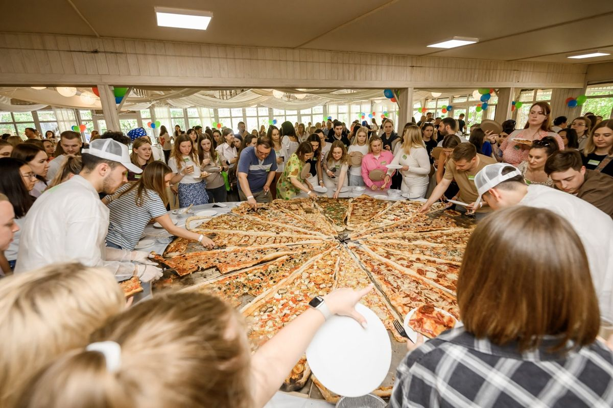
alt: Тимбилдинг WOW Пицца в зале: большая пицца-мозаика и сотни участников вокруг
Где программа встаёт в тайминг
Типичный запрос, с которым приходят ко мне ивент-менеджеры: «выездной день на базе отдыха, утром заезд и стратегическая сессия, вечером банкет, между ними нужно что-то живое, но не спорт». Пицца хорошо закрывает это окно, потому что гости заканчивают программу за едой. Обед отдельно планировать не нужно, если заказчик готов, что обедом будет пицца.
Три места в дне, которые я считаю рабочими:
После деловой части, вместо обеда. Люди пересидели в зале, им нужно встать, двигаться руками и говорить друг с другом. Через 2-2,5 часа все сыты и готовы к вечеру.
Перед банкетом. Пицца становится разогревом и закуской. Четвёртый этап можно сразу продолжить вечеринкой с пиццей, коктейлями и танцами.
Как центр фестиваля. Если у заказчика музыкальный или кулинарный фестиваль, печь с открытым огнём работает как точка притяжения на территории.
Если гостей больше 200, программа тоже работает: в таблице цен есть строки для 200-300, 300-500 и больше 500 человек, и цена с гостя при росте группы снижается.
Одно правило, которое я повторяю всем: не ставьте пиццу сразу после плотного обеда. Четвёртый этап программы это еда, и сытые гости его просто пропустят.
Что спросить у площадки до звонка нам
Печь работает на углях, поэтому её ставим на улице. Под неё нужно около 9 м² на открытом воздухе. Сама программа идёт на улице или в помещении: в зале команды готовят за столами, пиццу выносят к печи.
Список вопросов, который сэкономит вам один круг переписки с площадкой:
Разрешён ли открытый огонь и где именно.
Есть ли ровный участок около 9 м² рядом со зданием или поляной.
Где встанут столы для команд, если работаем на улице. Шатёр мы привозим сами.
Сколько километров от Москвы. Удалённость влияет на цену.
Вопрос про погоду я снимаю заранее: мы привозим шатёр и обогреватели, а также воду, столовые приборы и салфетки. От площадки нужен только участок под печь и место для столов.
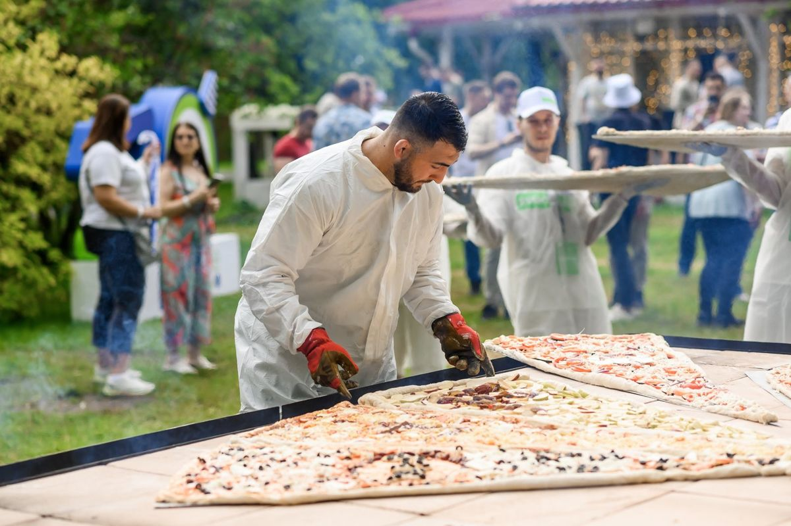
alt: Тимбилдинг WOW Пицца от Каталиста: повар в белом режет гигантскую пиццу на траве
Что входит в смету, а что остаётся у вас
В цену программы входят ведущий и инструкторы, печь со всеми подключениями, продукты, одноразовая посуда, одежда участникам, кухонные принадлежности, браслеты и коробочки для несъеденной пиццы. На выезде работают шеф-повар, ведущий, аниматоры и техники.
Банкет считается отдельно. Если после пиццы заказчик хочет полноценный ужин, это строка вашей сметы или ресторана площадки.
Ориентиры по цене на 2027 год:
60-200 гостей: 3 500-7 300 ₽ с гостя;
200-300 гостей: 3 200-4 700 ₽;
300-500 гостей: 3 200-4 100 ₽;
больше 500 гостей: от 3 200 ₽.
Для 100 гостей это от 350 000 до 730 000 ₽ за всю группу. Минимальный заказ 199 000 ₽. Разброс внутри диапазона дают число людей, формат, сезон и удалённость площадки от Москвы. Точную цифру я даю после брифа, коммерческое предложение мы собираем за 10 минут.
Когда гостям не нужно готовить самим
Бывает, что заказчику нужна не командная работа, а эффектная еда. Например, фестиваль, где гости приходят слушать музыку, или корпоратив с семьями. Для таких случаев есть вариант без тимбилдинга: наши повара сами готовят трёхметровую пиццу для гостей, а гости смотрят на печь, огонь и сам процесс.
Такой пиццей можно накормить 200 человек. Посмотрите ролик, чтобы понять масштаб и показать его заказчику:
Я советую этот вариант, когда в программе уже есть активная часть, а второй тимбилдинг перегрузит день. Печь остаётся той же, просто руками работает наша команда.
Что показать заказчику, чтобы он согласился
Ивент-менеджеру приходится продавать формат внутри компании заказчика. Вот что обычно работает:
Единственность. WOW Пицца единственная в России программа, где участники под руководством шеф-повара готовят пиццу длиной 3 метра. Печь тоже единственная выездная в России, мы спроектировали её сами.
Фотографии. Это один из самых популярных наших тимбилдингов, на нём чаще всего фотографируются. Для внутренних коммуникаций заказчика это готовый контент.
Понятная польза для HR. На странице программы перечислены навыки, которые она развивает: творчество, креативное мышление, нетворкинг, тайм-менеджмент и работу в команде. Каждая команда готовит свой кусок одной общей пиццы и отвечает перед остальными, поэтому это аргумент, а не красивые слова.
Подарок домой. Оставшуюся пиццу мы упаковываем в фирменные коробочки с логотипом компании, гости уносят её с собой.
Кто уже заказывал. WOW Пиццу заказывали Мастерская управления Сенеж (200 участников) и Северсталь (130 участников), отзывы есть на сайте.
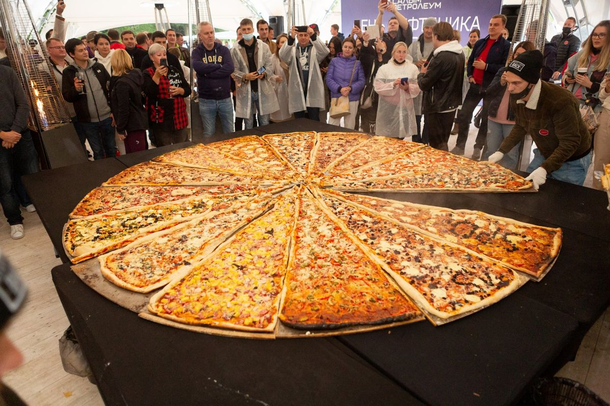
alt: Выездной тимбилдинг WOW Пицца: гигантская пицца и толпа участников вокруг стола
Teletype · флагман WOW Пицца, угол: вопросы и ответы (FAQ, 14 вопросов с фактом в каждом ответе) · 5056 знаков · публикация: 2026-11-17 10:00 МСК
WOW Пицца: 14 вопросов о тимбилдинге с трёхметровой пиццей и короткие ответы
Здесь собраны ответы на вопросы, которые нам задают перед заказом WOW Пиццы: сколько людей, сколько места, что с погодой, что входит в цену и что делать с остатками. Каждый ответ опирается на то, как программа устроена на деле. Если вашего вопроса нет, ответ, скорее всего, есть на странице программы, ссылка в конце.
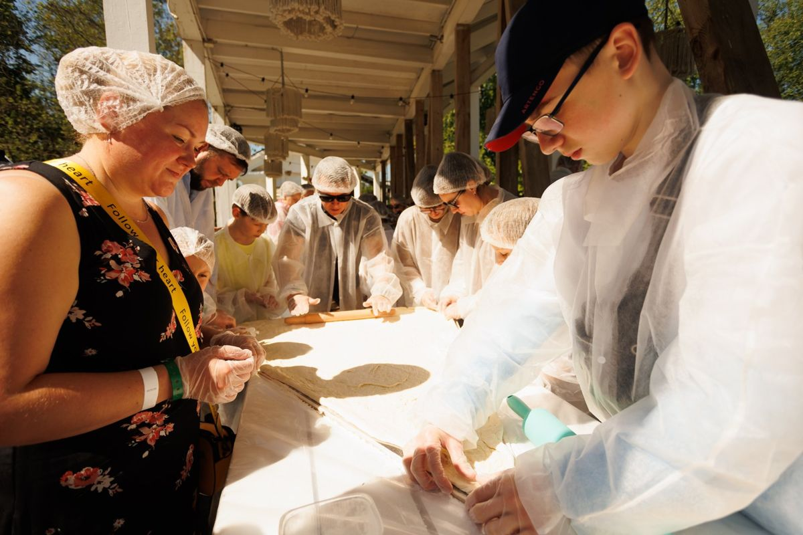
alt: Кулинарный тимбилдинг WOW Пицца: участники в колпаках раскатывают тесто за длинным столом
О формате
1. Что такое WOW Пицца в двух словах?
Кулинарный тимбилдинг, на котором участники под руководством шеф-повара готовят одну пиццу длиной 3 метра. Это единственная такая программа в России. Пиццу запекают в печи, которую мы спроектировали сами: другой выездной печи для пиццы такого размера в стране нет.
2. Нужно ли уметь готовить?
Нет. Тесто готовит наш бренд-шеф за день до мероприятия, оно приезжает готовым к выпечке. Участники раскатывают его, делают соусы, режут продукты и выкладывают начинку. Шеф-повар в начале объясняет тонкости, инструкторы помогают по ходу.
3. Как делятся команды и что делает каждая?
Ведущий делит гостей на команды в начале программы. Каждая команда собирает свой кусок общей пиццы. Задача в том, чтобы куски сошлись в одну красивую цельную пиццу и никто не подвёл остальных.
4. Сколько длится программа?
2-2,5 часа. За это время проходят 4 этапа: знакомство с печью, приготовление кусков, сборка и выпечка, общая трапеза.
5. Что программа даёт команде, кроме еды?
На странице программы перечислены пять навыков: творчество и кулинария, креативное мышление, нетворкинг, тайм-менеджмент и работа в команде. Нетворкинг тоже возникает сам: при сборке команды стыкуют свои куски и вместе несут пиццу к печи. Тайм-менеджмент здесь буквальный: все куски должны быть готовы к одному моменту, иначе пицца не уйдёт в печь.
6. Кто работает на площадке с вашей группой?
Выездная группа Каталиста: ведущий, шеф-повар, инструкторы, аниматоры и техники. Ведущий держит тайминг и делит людей на команды. Шеф отвечает за тесто и выпечку. Инструкторы помогают командам за столами. Техники отвечают за печь и подключения, аниматоры работают с гостями, пока пицца стоит в печи.
О месте и погоде
7. Сколько нужно места?
Под печь нужно около 9 м² на открытом воздухе. Сама программа идёт на улице или в помещении. В помещении команды готовят за столами, а пиццу переносят к печи. Перед выездом мы уточняем у площадки, где разрешён открытый огонь и как далеко от печи будут столы и зона, где гости едят.
8. Что если холодно или дождь?
Мы привозим шатёр, под которым команды работают, и обогреватели. Воду, столовые приборы и салфетки тоже везём сами. Сезон влияет на цену, это стоит учесть, если мероприятие зимой.
9. Почему пицца получается хрустящей, а не сырой посередине?
Печь собрана из 80 шамотных камней, привезённых из Италии, пиццу запекаем на углях. Тесто тонкое, оно ночь настаивается и приезжает пышным. Результат: хрустящая пицца с поджаристой корочкой.
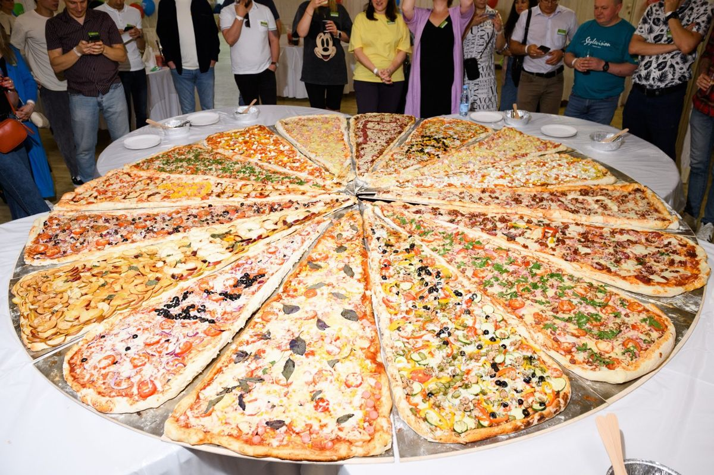
alt: Тимбилдинг WOW Пицца от Каталиста: гигантская круглая пицца с разными начинками, вид сверху
Как шеф Кирилл Еселев готовит такую пиццу, видно в ролике:
О людях и деньгах
10. На сколько человек рассчитана программа?
Базовый диапазон 50-200 человек. В таблице цен есть строки для 200-300, 300-500 и больше 500 гостей. Одной трёхметровой пиццей можно накормить 200 человек.
11. Сколько стоит?
Ориентир на 2027 год: для группы 60-200 гостей 3 500-7 300 ₽ с человека, для группы больше 500 гостей от 3 200 ₽. Для 100 гостей программа стоит от 350 000 до 730 000 ₽ за всю группу. Минимальный заказ 199 000 ₽. На итог влияют число людей, формат, сезон и удалённость площадки от Москвы.
12. Что входит в цену, а что нет?
Входят ведущий, инструкторы, печь и все подключения, продукты, одноразовая посуда, одежда участникам, кухонные принадлежности, браслеты и коробочки для несъеденной пиццы. Одежду выдаём на месте: на фото с наших программ участники работают в фартуках, сетках для волос и колпаках, так что свою одежду они не испачкают. Не входит банкет: его считаем отдельно.
13. Можно ли просто заказать пиццу для гостей, без тимбилдинга?
Да. Наши повара сами приготовят трёхметровую пиццу для гостей. Этот вариант выбирают для корпоративов и фестивалей, музыкальных или кулинарных, где гости приходят отдыхать. Печь с открытым огнём на углях в этом случае работает как центр площадки: гости смотрят, как пиццу собирают и отправляют в печь, а потом получают свой кусок.
14. Что делать, если пицца осталась?
Оставшуюся пиццу мы упаковываем в фирменные коробочки с логотипом вашей компании. Гости забирают её домой. Если вечер продолжается, четвёртый этап переходит в вечеринку с пиццей, коктейлями и танцами.
Как заказать
Напишите нам в Max или Telegram либо оставьте заявку на странице программы. Коммерческое предложение мы собираем за 10 минут. WOW Пиццу уже заказывали Северсталь (130 участников), ВТБ банк (150 участников) и Аэроглобус (120 участников), их отзывы опубликованы на сайте.
Telegraph · флагман WOW Пицца, угол: разбор механики (4 этапа, свой кусок у каждой команды, стыки, финал, коробки с логотипом) · 5299 знаков · публикация: 2026-11-17 10:00 МСК
Один корж на всех: разбор механики WOW Пиццы по этапам
В WOW Пицце нет победителей и проигравших, и именно поэтому она работает как тимбилдинг: у всех команд одна общая цель, а провал любой части видят все. Ниже разбираем механику по четырём этапам: что делает каждая команда, в какой момент команды начинают зависеть друг от друга и что гости видят в финале. Разбор пригодится тому, кто выбирает программу и хочет понять, почему готовка пиццы вообще считается командной задачей.
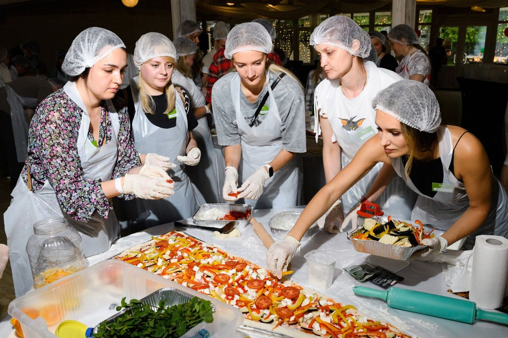
alt: Тимбилдинг WOW Пицца: команда в сетках для волос и фартуках выкладывает овощи на свой кусок пиццы
Почему у каждой команды свой кусок
Можно было бы дать каждой команде свою маленькую пиццу. Тогда получился бы обычный мастер-класс: каждый стол живёт своей жизнью и не замечает соседей. В WOW Пицце задача другая. Команды делают куски одной пиццы длиной 3 метра, и каждая отвечает за свой участок. Цель сформулирована так: собрать красивую цельную пиццу и не подвести остальных.
Из этой формулировки следуют три вещи, которые и делают готовку командной работой:
Своя зона ответственности. Команда сама решает, какую начинку положить и как её разложить. Выбор её, но результат общий.
Общий срок. Пицца уходит в печь одним целым. Если одна команда не успела, ждут все.
Видимый итог. Когда пицца собрана, каждый кусок лежит рядом с соседним. Разница в аккуратности и подходе видна сразу.
Обратите внимание: в механике нет штрафов, баллов и жюри. Давление создаёт не ведущий, а сама пицца. Никто не хочет, чтобы его кусок оказался тем самым, из-за которого общая пицца выглядит неровной. Этого хватает, чтобы команды работали всерьёз, но без соперничества, после которого кто-то уходит обиженным.
Этап 1. Правила и печь
Программа начинается с ведущего. Он приветствует гостей, делит их на команды и объясняет правила. Потом слово берёт шеф-повар: рассказывает тонкости работы с тестом и начинкой и знакомит участников с печью.
Знакомство с печью здесь не формальность. Это единственная выездная печь для пиццы в России, мы спроектировали её сами под трёхметровую пиццу. Участники видят, куда пойдёт их работа, и понимают масштаб. После этого вопрос «зачем нам стараться» обычно уже не звучит.
Этап 2. Каждая команда готовит свою часть
На втором этапе за столами больше всего движения. Команды готовят соусы, раскатывают тесто, режут продукты и выкладывают начинку. Тесто уже готово: наш бренд-шеф замешал его за день до события, ночь оно настаивалось и приехало пышным.
Тесто раскатывают прямо на поддоне из пищевой нержавеющей стали. Этот же поддон потом ставят в печь, поэтому работа команды доезжает до огня в том виде, в каком её сделали.
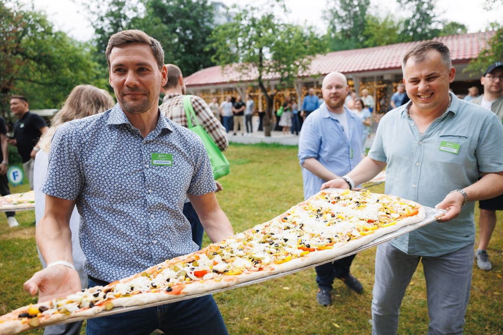
alt: Тимбилдинг WOW Пицца от Каталиста: двое участников несут длинный кусок пиццы на лужайке
Внутри команды на этом этапе быстро появляются роли. Кто-то режет, кто-то раскатывает, кто-то следит за временем и поглядывает на соседние столы. Никто их не назначает: задача сама делит людей по участкам. Здесь же проявляется тайм-менеджмент: у всех один дедлайн, и он не сдвигается.
Этап 3. Сборка и печь: где команды стыкуются
Третий этап и есть главный момент тимбилдинга. Команды собирают куски в одну пиццу и вместе переносят её в печь. Пиццу запекают на углях.
Стыки между кусками это то место, где команды впервые работают не рядом, а вместе. Нужно договориться, как сомкнуть края, кто несёт какую часть, в каком порядке подходить к печи. Команда, которая весь второй этап смотрела только в свой стол, здесь начинает разговаривать с соседями. Так и возникает нетворкинг, которого нет в программах, где у каждого стола своё блюдо.
Перенос тоже требует договорённости. Пицца длиной 3 метра лежит на поддоне из нержавеющей стали, и одному человеку её не поднять: нести приходится людям из разных команд одновременно. Кто-то командует, кто-то держит край, кто-то открывает путь к печи. У группы появляется общий лидер, которого никто не назначал, и это хороший повод для разговора после программы.
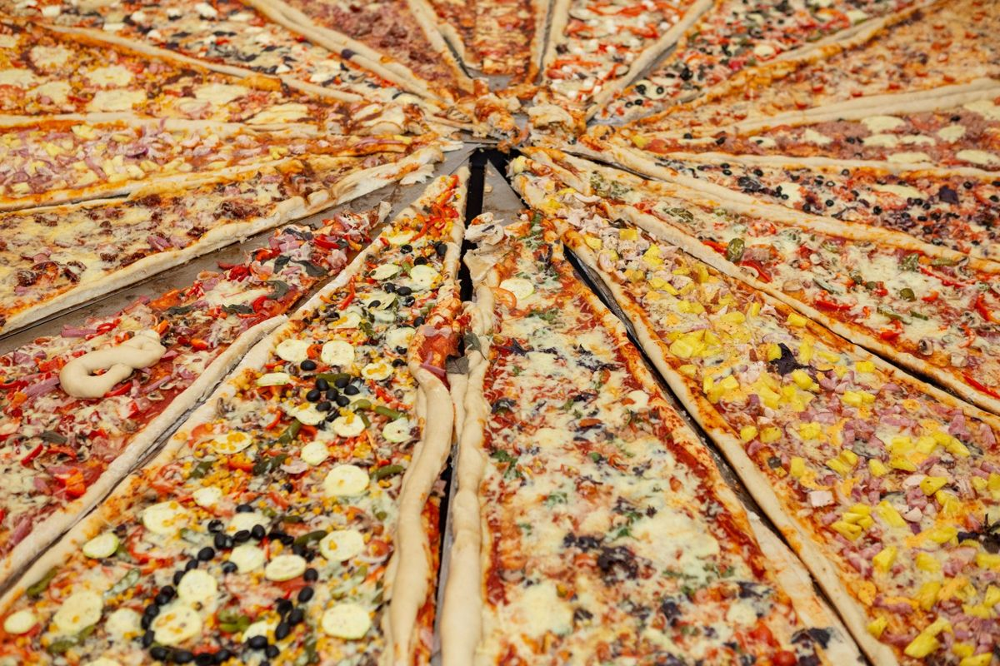
alt: Итог тимбилдинга WOW Пицца: огромная пицца с разными начинками, вид сверху
Пока пицца в печи, гости собираются вокруг огня. На этом этапе на программе делают больше всего фотографий: WOW Пицца один из наших самых популярных тимбилдингов, и на нём чаще всего фотографируются.
Как выглядит готовая пицца целиком и сколько людей вокруг неё собирается, видно в ролике. Одной такой пиццей можно накормить 200 человек:
Этап 4. Что видно в финале
Четвёртый этап простой: все едят горячую пиццу. Но именно здесь команда видит результат общей работы. Готовая пицца лежит перед гостями целиком, с разными начинками на разных участках. Каждый может найти свой кусок и попробовать соседский.
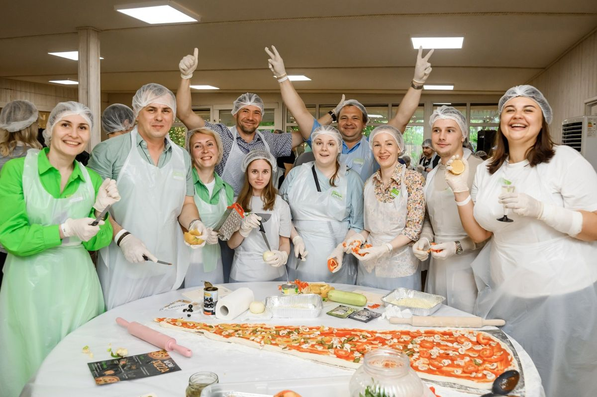
alt: Тимбилдинг WOW Пицца: команда в фартуках и сетках с поднятыми руками у стола с пиццей
Дальше есть два сценария. Первый: программа переходит в вечеринку с пиццей, коктейлями и танцами. Второй: гости расходятся, и оставшуюся пиццу мы упаковываем в фирменные коробочки с логотипом компании. Её забирают домой, и разговор о дне продолжается уже в семье.
Коробка с логотипом работает как последний штрих механики. Гость уносит не сувенир из магазина, а кусок того, что сделала его команда.
Если свести механику к одной строке: четыре этапа, 2-2,5 часа, одна пицца на всех. Свой кусок даёт ответственность, общий срок даёт координацию, сборка даёт разговор между командами, общая трапеза даёт итог, который видят все. Из 50+ программ Каталиста это та, где результат командной работы все съедают вместе.
Medium (EN) · флагман WOW Пицца, угол: для HR (какую проблему решает общий кулинарный формат, навыки, размеры групп, бюджет на гостя), EN · 5412 знаков · публикация: 2026-11-17 10:00 МСК
One Pizza, Ten Feet Long: What a Shared Cooking Format Does for Your Team
If your team works together every day but rarely depends on each other in a way everyone can see, a shared cooking format gives you that in about two hours. I'm Maria Varlamova, CEO of Katalist (Каталист), an event agency in Moscow. One of our most requested programs is WOW Pizza: groups of colleagues build a single pizza about 3 meters long, roughly ten feet, and bake it in a mobile oven we designed ourselves. As far as we know, no one else in Russia runs a program like it. Here is how I explain it to HR managers who are deciding whether it fits their people.
alt: WOW Pizza team building by Katalist: colleagues roll out dough under a green tent
The problem a shared dish solves
Most corporate events fall into one of two traps. Either everyone sits and listens, or everyone competes. Lectures don't create contact between people. Competitions do, but they also create winners and losers, and the people who lose often remember that part best.
A shared dish removes both problems. In WOW Pizza, each team prepares its own section of one large pizza. The instruction on our program page is simple: make your piece so the whole pizza looks good and you don't let the other teams down. Nobody wins. Everyone either succeeds together or watches their section sit next to a better one.
For HR, this matters in three situations I see over and over:
Departments that don't talk. A typical request: "Sales and operations sit on the same floor and only email each other." When their sections touch, they have to agree on the edges.
New hires after a hiring wave. People who don't know each other get a concrete task, not an icebreaker game.
Teams tired of formats with a scoreboard. Here the only result is a pizza everyone eats.
Five skills people actually practice
Our program page lists the skills the format develops. I'll translate each one into what you will see on the day.
Creativity and cooking. Teams choose toppings and lay them out on their section. Our chef explains the basics first, so nobody needs to know how to cook. The dough is prepared by our brand chef the day before and arrives ready to bake.
Creative thinking. A section of a giant pizza is a blank canvas with constraints: it has to match its neighbors and survive the move to the oven. Teams figure out how to stand out without breaking the whole.
Networking. This is the one HR managers usually care about most. During stage three, teams assemble the sections and carry the pizza to the oven together. People who spent the first hour at their own table now negotiate with the next table over.
Time management. The pizza goes into the oven in one piece. If one team is late, everyone waits. Nobody needs to explain deadlines; the oven explains them.
Teamwork. Roles inside each team appear on their own. Someone rolls the dough, someone cuts, someone watches the clock. You can learn a lot about a team by watching who takes which job.
alt: Outdoor team building with a giant pizza: a crowd of participants around the finished pizza
Here is our chef Kirill Eselev showing how the pizza comes together:
Group sizes and timing
The program runs 2 to 2.5 hours and has four stages: a briefing with the host and chef, preparing the sections, assembling and baking, and eating. The core format is designed for 50 to 200 people, and our price table also covers groups of 200 to 300, 300 to 500, and more than 500.
It works outdoors or indoors. The oven itself needs about 9 square meters in the open air because we bake over coals. We bring the oven, a tent, water and heaters, so the weather question is mostly handled before you ask it. Companies that have booked WOW Pizza include the Senezh Management Lab (200 participants) and Brooke Agency (groups of 150 and 200), and their reviews are on our site.
Budget per guest
These are our 2027 guide prices in rubles:
60 to 200 guests: 3,500 to 7,300 RUB per guest;
200 to 300 guests: 3,200 to 4,700 RUB per guest;
300 to 500 guests: 3,200 to 4,100 RUB per guest;
more than 500 guests: from 3,200 RUB per guest.
For 100 guests that comes to 350,000 to 730,000 RUB for the whole group. The minimum order is 199,000 RUB. The final figure depends on headcount, format, season and how far the venue is from Moscow.
The price includes the host, instructors, the oven and all connections, ingredients, disposable tableware, aprons and other clothing for participants, kitchen tools, wristbands, and branded boxes for leftover pizza. A banquet is priced separately.
Is it right for your team?
alt: WOW Pizza team building: two smiling colleagues carry a section of the giant pizza
I'd recommend WOW Pizza when your goal is contact between people who don't usually work side by side, and when you want a result people can see and share. It is one of our most photographed programs, which helps if you also need content for internal communications. Leftovers go home in boxes with your company logo, so the day keeps going after people leave.
I'd suggest something else if your group is under 50 people and you want a deep, structured debrief: this is a social format, not a facilitated workshop. And if your team needs a break from doing anything at all, we can skip the team building part. Our cooks will make the pizza for your guests, and people simply enjoy the show.
Substack (EN) · флагман WOW Пицца, угол: сравнение форматов (одна общая пицца vs мастер-класс со своими столами, кулинарный баттл, банкет с шоу-кухней), EN · 5350 знаков · публикация: 2026-11-17 10:00 МСК
Cooking Class, Kitchen Battle, Show Kitchen or One Giant Pizza: Picking a Culinary Team Building Format
The right culinary team building format depends on one question: do you want people to cook next to each other, against each other, for each other, or together on one thing? Each answer points to a different format, and picking the wrong one is how a cooking day turns into a nice lunch that changes nothing. I'm Maria Varlamova, CEO of Katalist (Каталист), a Moscow event agency. Below I compare four common formats, including our own WOW Pizza, and say when I'd pick each one.
alt: Culinary team building WOW Pizza by Katalist: a giant round pizza with different toppings, top view
Four formats in one paragraph each
The cooking class with individual stations. Each participant or pair gets a station, a set of ingredients and a recipe. A chef demonstrates, people repeat. Everyone leaves with their own dish and a new skill. Interaction happens mostly with the chef and the person at the next station.
The cooking battle. Teams cook against each other, usually against the clock, and a jury picks a winner. It is loud and energetic, and it creates a clear story: who won, who nearly won, who burned the sauce.
The banquet with a show kitchen. Guests don't cook at all. Chefs cook in front of them, the cooking is part of the entertainment, and the evening flows around the food.
One shared dish. Teams cook parts of a single dish that only works when all the parts fit together. In our WOW Pizza, each team prepares its own section of one pizza about 3 meters long, roughly ten feet, and the sections are joined and baked as one. There is no jury and no winner. The goal on our program page is to make a beautiful whole pizza and not let the other teams down.
What each format actually builds
It helps to stop thinking about food and look at the connections each format creates.
Individual stations build skill and a pleasant shared experience. They don't create dependence between people. If your goal is a relaxed treat for a team that already works well together, that is fine.
A battle builds energy inside each team and rivalry between teams. Useful when you want a team to rally. Risky when departments already compete for budget or attention.
A show kitchen builds atmosphere. People talk, but about the evening, not about working together.
A shared dish builds dependence between teams. Each team owns its section, but the result belongs to everyone. People have to coordinate edges, timing and the moment the whole thing goes into the oven.
alt: Team building in aprons and hairnets: a team lays vegetables on its section of the giant pizza
In WOW Pizza you can watch this happen in stage three. Teams assemble their sections into one pizza and carry it to the oven together. That's the moment when tables that ignored each other for an hour start negotiating. Our program page lists networking and time management among the skills the format develops, and that stage is where both show up.
The practical side: space, time and group size
Formats differ in logistics as much as in effect.
Individual stations need a kitchen studio or a room fitted with burners, which caps the group size at however many stations fit. A battle has the same limit plus a jury. A show kitchen scales easily, because guests only watch.
A shared dish scales differently. WOW Pizza runs 2 to 2.5 hours, the core format is designed for 50 to 200 people, and our price table goes up to groups of more than 500. It can be held outdoors or indoors, but the oven needs about 9 square meters in the open air, because we bake over coals. We designed that oven ourselves, and it is the only mobile pizza oven in Russia. Our brand chef makes the dough the day before, so participants need no baking skills at all.
Here is what the finished pizza looks like with a crowd around it. One pizza can feed 200 people:
When to choose which
My short guide, based on what the client wants to change:
"We want people to learn something and relax." Cooking class with individual stations.
"Our team is flat and needs a jolt." Cooking battle, if the teams don't already compete in their daily work.
"We want a great evening, nobody wants to do anything." Banquet with a show kitchen. With WOW Pizza there is a version of this too: our cooks make the pizza for the guests, which works well at corporate parties and festivals.
"Departments don't cooperate, and we want them to feel they depend on each other." One shared dish.
Formats can also be combined. A shared pizza can flow straight into a party with cocktails and dancing, and a banquet is priced separately, so you can add a full dinner afterwards.
alt: WOW Pizza team building: a chef in white slices the giant pizza on the grass
What the shared format costs
For a group of 60 to 200 guests, WOW Pizza costs 3,500 to 7,300 RUB per guest by our 2027 guide prices, with a minimum order of 199,000 RUB. The price covers the host, instructors, the oven and its connections, ingredients, tableware, clothing for participants and boxes for leftovers. Those boxes carry the client's logo, and people take their pizza home.
One last observation: WOW Pizza is among the programs where our guests take the most photos. If part of your goal is content for internal channels, that is worth factoring in.